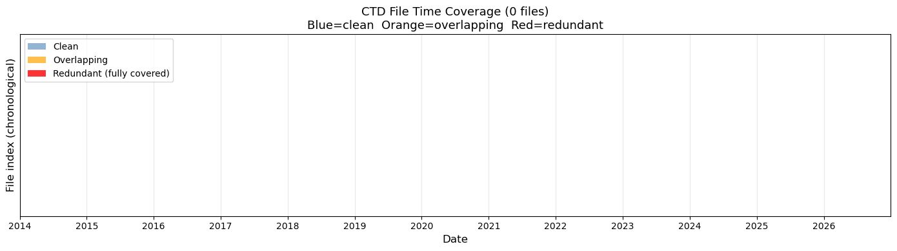
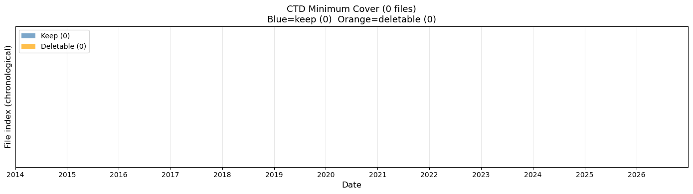

Data Download#
Cell#
Copy and validate datasets from OOINET to localhost.#
The data order process is manual: Go to oceanobservatories.org and set up an order.
This involves getting an approved identity, logging in, finding and navigating the
data access page, submitting the order. When the resulting order data is staged
the system sends an email with a single URL. This is manually placed in
~/argosy/download_link_list.txt. In principle this can be multiple URLs;
but probably avoids complexity problems to just keep it to one at a time.
Here is an example URL:
https://downloads.oceanobservatories.org/async_results/kilroy1618@gmail.com/20260207T235914738Z-RS01SBPS-SF01A-2A-CTDPFA102-streamed-ctdpf_sbe43_sample
The Python cells in this notebook operate as follows:
Assess the download link: How many files of interest (NetCDF) to download
Download. From
~/argosy/download_link_list.txtpull in the source data filesTo localhost `~/ooi/ooinet/rca/SlopeBase/{scalar | vector}/yyyy_instrument
Scan the data to ensure the expected sensor streams are present
For example a CTD file should include dissolved oxygen in addition to salinity and so on
Scan for time-redundant source data files
If any are found: Write a bash
~/argosy/delete_overlaps.shand run this from the command line
Scan remaining files for “minimum cover”: Full time range of File A is covered by File B and File C
If any found: Write
~/argosy/delete_overlaps2.shand run this
Visualization: Show instrument presence/absence as a horizontal timeline
pre-download#
Read the file ~/argosy/download_link_list.txt for a set of download URLs. For each of these:
Give an assessment of the pending data volume.
import sys
from pathlib import Path
sys.path.insert(0, str(Path("~/argosy").expanduser()))
import ooipaths as op
SITE = op.DEFAULT_SITE
# Pre-download: Estimate data volume for each URL in download_link_list.txt
# Run this cell before the bulk download to see how much data is pending.
import requests
from pathlib import Path
from bs4 import BeautifulSoup
import re
def estimate_download_volume():
"""For each active URL in download_link_list.txt, report approximate download size."""
url_list_file = Path("~/argosy/download_link_list.txt").expanduser()
if not url_list_file.exists():
print(f"File not found: {url_list_file}")
return
with open(url_list_file, 'r') as f:
urls = [line.strip() for line in f if line.strip() and not line.strip().startswith('#')]
if not urls:
print("No active URLs in download_link_list.txt")
return
print(f"Active URLs: {len(urls)}")
print(f"{'='*80}\n")
grand_total_bytes = 0
grand_total_files = 0
for url_idx, url in enumerate(urls, 1):
print(f"[{url_idx}/{len(urls)}] {url}")
try:
response = requests.get(url, timeout=30)
response.raise_for_status()
soup = BeautifulSoup(response.text, 'html.parser')
links = soup.find_all('a')
# Count .nc files (exclude .ncml)
nc_links = [link for link in links
if link.get('href', '').endswith('.nc')
and not link.get('href', '').endswith('.ncml')]
# Group files by instrument code
instrument_codes = ['CTDPF', 'FLORT', 'PHSEN', 'PCO2W', 'NUTNR', 'PARAD', 'VELPT', 'SPKIR', 'OPTAA', 'DOFST']
by_instrument = {}
for link in nc_links:
href = link.get('href', '')
matched = False
for code in instrument_codes:
if code in href:
by_instrument.setdefault(code, []).append(link)
matched = True
break
if not matched:
by_instrument.setdefault('OTHER', []).append(link)
# Determine which instrument this URL is for (from the URL path)
url_instrument = None
for code in instrument_codes:
if code in url:
url_instrument = code
break
# Estimate sizes per instrument via HEAD requests on samples
url_total_bytes = 0
print(f" Total .nc files: {len(nc_links)}")
if url_instrument:
print(f" URL instrument: {url_instrument}")
for code, code_links in sorted(by_instrument.items()):
sample_size = min(2, len(code_links))
sampled_bytes = 0
sampled = 0
for link in code_links[:sample_size]:
href = link.get('href', '')
file_url = url.rstrip('/') + '/' + href
try:
head = requests.head(file_url, timeout=15, allow_redirects=True)
content_length = head.headers.get('Content-Length')
if content_length:
sampled_bytes += int(content_length)
sampled += 1
except Exception:
pass
if sampled > 0:
avg = sampled_bytes / sampled
est = avg * len(code_links)
will_download = (code == url_instrument)
tag = ' <-- WILL DOWNLOAD' if will_download else ' (skipped)'
print(f" {code:6s}: {len(code_links):3d} files, ~{avg/(1024*1024):.0f} MB each, est {est/(1024*1024*1024):.2f} GB{tag}")
if will_download:
url_total_bytes += est
else:
print(f" {code:6s}: {len(code_links):3d} files, size unknown")
grand_total_bytes += url_total_bytes
grand_total_files += len(by_instrument.get(url_instrument, []))
except Exception as e:
print(f" Error: {e}")
print()
print(f"{'='*80}")
print(f"WILL DOWNLOAD: ~{grand_total_files} files, approximately {grand_total_bytes / (1024*1024*1024):.2f} GB")
print(f"(Bundled CTD/other files in the same directories will be skipped)")
estimate_download_volume()
No active URLs in download_link_list.txt
download#
Download NetCDF data files from each of the URLs listed in ~/argosy/download_link_list.txt.
When a URL resource is depleted: Delete that URL from this file and
append it to ~/argosy/downlinklist_completed.txt.
#!/usr/bin/env python
# coding: utf-8
# # Data Download
#
#
# This notebook copies datasets from OOINET to localhost.
#
#
# The data order is manual.
# The resulting links are placed in the text file `~/argosy/download_link_list.txt`: One URL per line:
#
#
# ```
# https://downloads.oceanobservatories.org/async_results/kilroy1618@gmail.com/20260207T235914738Z-RS01SBPS-SF01A-2A-CTDPFA102-streamed-ctdpf_sbe43_sample
# ```
#
# We want the code in the cell below to read this file and go to each link in succession,
# downloading the data to a corresponding localhost folder.
import requests
from pathlib import Path
from bs4 import BeautifulSoup
import re
def parse_year_from_filename(filename):
"""Extract year from NetCDF filename."""
pattern = r'_(\d{4})\d{2}\d{2}T\d{6}\.\d+-\d{8}T\d{6}\.\d+\.nc$'
match = re.search(pattern, filename)
if match:
return int(match.group(1))
return None
def is_file_complete(filepath):
"""Check if file exists and is non-zero size."""
if not filepath.exists():
return False
return filepath.stat().st_size > 0
def download_file(url, destination):
"""Download a file from URL to destination."""
temp_file = destination.with_suffix('.tmp')
try:
response = requests.get(url, stream=True, timeout=300)
response.raise_for_status()
with open(temp_file, 'wb') as f:
for chunk in response.iter_content(chunk_size=8192):
f.write(chunk)
temp_file.rename(destination)
return True
except Exception as e:
print(f" Error: {e}")
if temp_file.exists():
temp_file.unlink()
return False
def _move_url_to_completed(url_list_file, url):
"""Remove a URL from download_link_list.txt and append to downlinklist_completed.txt."""
completed_file = Path("~/argosy/downlinklist_completed.txt").expanduser()
# Append to completed file
with open(completed_file, 'a') as f:
f.write(url + '\n')
# Remove from URL list file
with open(url_list_file, 'r') as f:
lines = f.readlines()
with open(url_list_file, 'w') as f:
for line in lines:
if line.strip() != url:
f.write(line)
def bulk_download(instrument="ctd", ooi_instrument="CTDPF"):
"""Bulk download instrument files from URL list with restart tolerance.
On successful completion of a URL, removes it from download_link_list.txt
and appends it to downlinklist_completed.txt."""
print(f"Running bulk_download for instrument type = {instrument} (OOI: {ooi_instrument})")
# Read URL list
url_list_file = Path("~/argosy/download_link_list.txt").expanduser()
if not url_list_file.exists():
print(f"File not found: {url_list_file}")
return
with open(url_list_file, 'r') as f:
urls = [line.strip() for line in f if line.strip() and not line.strip().startswith('#')]
print(f"Found {len(urls)} URLs to process\n")
# Base folder for all instrument/year source data
base_folder = op.ooinet_dir(SITE, channel="scalar")
if not base_folder.exists():
print(f"Base folder does not exist: {base_folder}")
return
# Create year folders as needed
for year in range(2014, 2027):
year_folder = base_folder / f"{year}_{instrument}"
year_folder.mkdir(exist_ok=True)
total_downloaded = 0
total_skipped = 0
total_complete = 0
for url_idx, url in enumerate(urls, 1):
print(f"=== URL {url_idx}/{len(urls)} ===")
print(f"{url}")
try:
response = requests.get(url, timeout=30)
response.raise_for_status()
soup = BeautifulSoup(response.text, 'html.parser')
links = soup.find_all('a')
nc_files = [
link.get('href', '') for link in links
if link.get('href', '').endswith('.nc')
and not link.get('href', '').endswith('.ncml')
and ooi_instrument in link.get('href', '')
]
already_downloaded = 0
to_download = []
for filename in nc_files:
year = parse_year_from_filename(filename)
if year is None:
continue
dest_file = base_folder / f"{year}_{instrument}" / filename
if is_file_complete(dest_file):
already_downloaded += 1
else:
to_download.append((filename, year))
print(f" Total .nc files: {len(nc_files)}")
print(f" Already downloaded: {already_downloaded}")
print(f" Remaining to download: {len(to_download)}")
total_complete += already_downloaded
if not to_download:
print(f" All files complete, skipping")
print()
continue
for file_idx, (filename, year) in enumerate(to_download, 1):
dest_file = base_folder / f"{year}_{instrument}" / filename
file_url = url.rstrip('/') + '/' + filename
print(f" [{file_idx}/{len(to_download)}] {filename} -> {year}_{instrument}/")
if download_file(file_url, dest_file):
total_downloaded += 1
print(f" Complete: {dest_file.stat().st_size / (1024*1024):.1f} MB")
else:
total_skipped += 1
print()
except Exception as e:
print(f" Error processing URL: {e}\n")
continue
print(f"=== Download Summary ===")
print(f"Files already complete: {total_complete}")
print(f"Files newly downloaded: {total_downloaded}")
print(f"Files failed/skipped: {total_skipped}")
print("\nTotal files by year:")
for year in range(2014, 2027):
year_folder = base_folder / f"{year}_{instrument}"
if year_folder.exists():
count = len(list(year_folder.glob("*.nc")))
if count > 0:
print(f" {year}: {count} files")
# Instrument key -> OOI instrument code mapping (from Sensor Table):
SCALAR_INSTRUMENTS = {
'ctd': 'CTDPF',
'flor': 'FLORT',
'ph': 'PHSEN',
'pco2': 'PCO2W',
'nitr': 'NUTNR',
'par': 'PARAD',
}
# Vector instruments (not yet active):
# 'vel': 'VELPT',
# 'irr': 'SPKIR',
# 'oa': 'OPTAA',
# Run bulk download: For each URL, determine its instrument from the URL path
# and only download files matching that instrument.
url_list_file = Path("~/argosy/download_link_list.txt").expanduser()
if url_list_file.exists():
with open(url_list_file, 'r') as f:
urls = [line.strip() for line in f if line.strip() and not line.strip().startswith('#')]
# Map OOI instrument codes to our keys
CODE_TO_KEY = {v: k for k, v in SCALAR_INSTRUMENTS.items()}
for url in urls:
# Determine instrument from URL
matched_key = None
for code, key in CODE_TO_KEY.items():
if code in url:
matched_key = key
break
if matched_key:
bulk_download(matched_key, SCALAR_INSTRUMENTS[matched_key])
else:
print(f"WARNING: Could not determine instrument for URL: {url}")
else:
print("No download_link_list.txt found.")
Cell 3: Sensor Audit#
Validates all source instrument files contain expected science variables (from sensor table).
Generates ~/argosy/delete_bad_sensor_files.sh if problems found.
Run this cell BEFORE the overlap and cover cells.
# Cell 3: Sensor Audit
# Validates that all source instrument files contain their expected science variables.
# Generates ~/argosy/delete_bad_sensor_files.sh for files that fail validation.
# Does NOT delete files directly — review and run the script manually.
import xarray as xr
from pathlib import Path
SCALAR_DIR = op.ooinet_dir(SITE, channel="scalar")
SCRIPT_PATH = Path("~/argosy/delete_bad_sensor_files.sh").expanduser()
# Expected variables per instrument (from sensor table)
EXPECTED = {
'ctd': ['sea_water_temperature', 'sea_water_practical_salinity',
'sea_water_density', 'corrected_dissolved_oxygen'],
'flor': ['optical_backscatter', 'fluorometric_cdom', 'fluorometric_chlorophyll_a'],
'par': ['par_counts_output'],
'ph': ['ph_seawater'],
'nitr': ['salinity_corrected_nitrate'],
'pco2': ['pco2_seawater'],
}
total_files = 0
total_bad = 0
bad_files = []
for instrument, expected_vars in EXPECTED.items():
print(f"\n{'='*60}")
print(f" {instrument.upper()} — expecting: {expected_vars}")
print(f"{'='*60}")
inst_files = 0
inst_bad = 0
for year in range(2014, 2027):
folder = SCALAR_DIR / f"{year}_{instrument}"
if not folder.exists():
continue
for f in sorted(folder.glob("*.nc")):
if '_cal_' in f.name:
continue
inst_files += 1
total_files += 1
try:
ds = xr.open_dataset(f)
all_vars = set(ds.data_vars.keys())
all_coords = set(ds.coords.keys())
missing = [v for v in expected_vars if v not in all_vars]
has_depth = 'depth' in all_vars or 'depth' in all_coords
ds.close()
if missing or not has_depth:
inst_bad += 1
total_bad += 1
reason = []
if missing:
reason.append(f"Missing: {missing}")
if not has_depth:
reason.append("Missing: depth")
bad_files.append((f, '; '.join(reason)))
print(f" BAD: {f.parent.name}/{f.name[:65]}")
for r in reason:
print(f" {r}")
except Exception as e:
inst_bad += 1
total_bad += 1
bad_files.append((f, f"Corrupt: {e}"))
print(f" BAD (corrupt): {f.parent.name}/{f.name[:65]}")
print(f" Checked: {inst_files} | OK: {inst_files - inst_bad} | Bad: {inst_bad}")
# Write or clean up script
if bad_files:
lines = [
"#!/bin/bash",
"# Auto-generated: deletes source files missing expected science variables",
"",
]
for f, reason in bad_files:
lines.append(f"# {reason}")
lines.append(f'rm "{f}"')
SCRIPT_PATH.write_text("\n".join(lines) + "\n")
SCRIPT_PATH.chmod(0o755)
print(f"\nDeletion script written: {SCRIPT_PATH}")
print(f"Review and run with: bash {SCRIPT_PATH}")
else:
if SCRIPT_PATH.exists():
SCRIPT_PATH.unlink()
print(f"\n(Removed stale {SCRIPT_PATH.name})")
print("\nAll files pass sensor audit.")
print(f"\n{'='*60}")
print(f"SUMMARY: {total_files} files checked, {total_bad} bad, {total_files - total_bad} OK")
print(f"{'='*60}")
============================================================
CTD — expecting: ['sea_water_temperature', 'sea_water_practical_salinity', 'sea_water_density', 'corrected_dissolved_oxygen']
============================================================
Checked: 0 | OK: 0 | Bad: 0
============================================================
FLOR — expecting: ['optical_backscatter', 'fluorometric_cdom', 'fluorometric_chlorophyll_a']
============================================================
Checked: 0 | OK: 0 | Bad: 0
============================================================
PAR — expecting: ['par_counts_output']
============================================================
Checked: 0 | OK: 0 | Bad: 0
============================================================
PH — expecting: ['ph_seawater']
============================================================
Checked: 0 | OK: 0 | Bad: 0
============================================================
NITR — expecting: ['salinity_corrected_nitrate']
============================================================
Checked: 0 | OK: 0 | Bad: 0
============================================================
PCO2 — expecting: ['pco2_seawater']
============================================================
Checked: 0 | OK: 0 | Bad: 0
All files pass sensor audit.
============================================================
SUMMARY: 0 files checked, 0 bad, 0 OK
============================================================
Cell 4: Overlap Audit#
Identifies CTD files whose time range is fully contained within another single file.
Generates ~/argosy/delete_single_redundant_files.sh if redundant files found.
# Jupyter cell: CTD file overlap audit
# Identifies redundant CTD files and plots time coverage bars
# This is part one: It identifies files that are entirely overlapped by other files and adds them
# to a deletion script. After running this script there should be no more red files; just yellow
# and possibly blue. See the next cell for a further cleaning step.
import re
import matplotlib.pyplot as plt
import matplotlib.dates as mdates
from pathlib import Path
from datetime import datetime
print("CTD File Overlap Audit")
print("=" * 60)
BASE = op.ooinet_dir(SITE, channel="scalar")
YEARS = range(2014, 2027)
# --- Parse time range from filename ---
def parse_time_range(filename):
"""Extract start and end datetime from CTD filename."""
pattern = r'_(\d{8}T\d{6})\.\d+-(\d{8}T\d{6})\.\d+\.nc$'
match = re.search(pattern, filename)
if not match:
return None, None
fmt = "%Y%m%dT%H%M%S"
try:
start = datetime.strptime(match.group(1), fmt)
end = datetime.strptime(match.group(2), fmt)
return start, end
except ValueError:
return None, None
# --- Collect all CTD files ---
all_files = []
for year in YEARS:
folder = BASE / f"{year}_ctd"
if not folder.exists():
continue
for f in sorted(folder.glob("*.nc")):
start, end = parse_time_range(f.name)
if start and end:
all_files.append({'name': f.name, 'path': f, 'start': start, 'end': end, 'year': year})
print(f"Total CTD files found: {len(all_files)}")
# --- Detect overlaps ---
# Sort by start time
all_files.sort(key=lambda x: x['start'])
overlaps = []
for i in range(len(all_files)):
for j in range(i + 1, len(all_files)):
a = all_files[i]
b = all_files[j]
# If b starts after a ends, no overlap possible for any later j
if b['start'] >= a['end']:
break
# Overlap: b starts before a ends
overlap_start = max(a['start'], b['start'])
overlap_end = min(a['end'], b['end'])
overlap_days = (overlap_end - overlap_start).total_seconds() / 86400
overlaps.append({
'file_a': a['name'],
'file_b': b['name'],
'overlap_start': overlap_start,
'overlap_end': overlap_end,
'overlap_days': overlap_days
})
print(f"Overlapping file pairs: {len(overlaps)}")
if overlaps:
print(f"\nOverlap details:")
for ov in overlaps:
print(f"\n A: {ov['file_a']}")
print(f" B: {ov['file_b']}")
print(f" Overlap: {ov['overlap_start'].date()} to {ov['overlap_end'].date()} ({ov['overlap_days']:.1f} days)")
# --- Identify redundant files ---
# A file is redundant if its entire time range is covered by another file
redundant = []
for i, f in enumerate(all_files):
for j, g in enumerate(all_files):
if i == j:
continue
# f is fully contained within g
if g['start'] <= f['start'] and g['end'] >= f['end'] and f['name'] != g['name']:
redundant.append({'redundant': f, 'covered_by': g})
break
print(f"\nFully redundant files (entirely covered by another): {len(redundant)}")
for r in redundant:
print(f" REDUNDANT: {r['redundant']['name']}")
print(f" COVERED BY: {r['covered_by']['name']}")
# --- Strategy recommendation ---
print(f"\n{'=' * 60}")
print("STRATEGY RECOMMENDATION")
print(f"{'=' * 60}")
script_path = Path("~/argosy/delete_single_redundant_files.sh").expanduser()
if len(overlaps) == 0:
print("No overlaps detected - CTD files appear clean.")
if script_path.exists():
script_path.unlink()
print("(Removed stale delete_single_redundant_files.sh)")
elif len(redundant) > 0:
total_size = sum(r['redundant']['path'].stat().st_size for r in redundant) / (1024*1024)
print(f"Delete {len(redundant)} fully redundant files ({total_size:.1f} MB recoverable)")
print("For partial overlaps: Keep the file with the longer time span.")
# Write shell script
lines = [
"#!/bin/bash",
"# Auto-generated by ctd_overlap_audit.py",
"# Deletes fully redundant CTD files (time range entirely covered by another file)",
"",
]
for r in redundant:
lines.append(f"# Covered by: {r['covered_by']['name']}")
lines.append(f"rm \"{r['redundant']['path']}\"")
lines.append("")
script_path.write_text("\n".join(lines))
script_path.chmod(0o755)
print(f"\nDeletion script written to: {script_path}")
print(f"Review and run with: bash {script_path}")
else:
print(f"{len(overlaps)} partial overlaps found but no fully redundant files.")
print("For each overlapping pair: Keep the file with the longer time span.")
print("Partial overlaps may require trimming rather than deletion.")
# --- Plot: time coverage bars ---
print(f"\nGenerating coverage plot...")
fig, ax = plt.subplots(figsize=(14, max(4, len(all_files) * 0.25)))
# Color: red if redundant, orange if overlapping, blue otherwise
redundant_names = {r['redundant']['name'] for r in redundant}
overlap_names = {ov['file_a'] for ov in overlaps} | {ov['file_b'] for ov in overlaps}
for i, f in enumerate(all_files):
if f['name'] in redundant_names:
color = 'red'
alpha = 0.8
elif f['name'] in overlap_names:
color = 'orange'
alpha = 0.7
else:
color = 'steelblue'
alpha = 0.6
ax.barh(i, (f['end'] - f['start']).total_seconds() / 86400,
left=mdates.date2num(f['start']),
height=0.7, color=color, alpha=alpha, edgecolor='none')
# Format x-axis as dates
ax.xaxis_date()
ax.xaxis.set_major_formatter(mdates.DateFormatter('%Y'))
ax.xaxis.set_major_locator(mdates.YearLocator())
ax.set_xlabel('Date', fontsize=12)
ax.set_ylabel('File index (chronological)', fontsize=12)
ax.set_title(f'CTD File Time Coverage ({len(all_files)} files)\n'
f'Blue=clean Orange=overlapping Red=redundant', fontsize=13)
ax.set_xlim(mdates.date2num(datetime(2014, 1, 1)),
mdates.date2num(datetime(2026, 12, 31)))
ax.grid(True, axis='x', alpha=0.3)
ax.set_yticks([])
# Legend
from matplotlib.patches import Patch
legend_elements = [
Patch(facecolor='steelblue', alpha=0.6, label='Clean'),
Patch(facecolor='orange', alpha=0.7, label='Overlapping'),
Patch(facecolor='red', alpha=0.8, label='Redundant (fully covered)'),
]
ax.legend(handles=legend_elements, loc='upper left')
plt.tight_layout()
plt.savefig(Path("~/argosy/ctd_coverage.png").expanduser(), dpi=150, bbox_inches='tight')
plt.show()
print("Plot saved to ~/argosy/ctd_coverage.png")
CTD File Overlap Audit
============================================================
Total CTD files found: 0
Overlapping file pairs: 0
Fully redundant files (entirely covered by another): 0
============================================================
STRATEGY RECOMMENDATION
============================================================
No overlaps detected - CTD files appear clean.
Generating coverage plot...

Plot saved to ~/argosy/ctd_coverage.png
cover analysis#
CTD only, room to generalize: Find a minimal set of files that preserves full time coverage.
Cell 5: Minimum Cover Audit#
Identifies CTD files whose time range is covered by the union of multiple other files.
Generates ~/argosy/delete_cover_redundant_files.sh if redundant files found.
# Jupyter cell: CTD minimum cover analysis
# Finds the minimal set of files that preserves full time coverage,
# then generates a deletion script for all others.
import re
import matplotlib.pyplot as plt
import matplotlib.dates as mdates
from pathlib import Path
from datetime import datetime
print("CTD Minimum Cover Analysis")
print("=" * 60)
BASE = op.ooinet_dir(SITE, channel="scalar")
YEARS = range(2014, 2027)
def parse_time_range(filename):
pattern = r'_(\d{8}T\d{6})\.\d+-(\d{8}T\d{6})\.\d+\.nc$'
match = re.search(pattern, filename)
if not match:
return None, None
fmt = "%Y%m%dT%H%M%S"
try:
return datetime.strptime(match.group(1), fmt), datetime.strptime(match.group(2), fmt)
except ValueError:
return None, None
# --- Collect all CTD files ---
all_files = []
for year in YEARS:
folder = BASE / f"{year}_ctd"
if not folder.exists():
continue
for f in sorted(folder.glob("*.nc")):
start, end = parse_time_range(f.name)
if start and end:
all_files.append({'name': f.name, 'path': f, 'start': start, 'end': end})
all_files.sort(key=lambda x: x['start'])
print(f"Total CTD files: {len(all_files)}")
# --- Greedy interval cover algorithm ---
# At each step: among all files whose start <= current frontier,
# pick the one with the furthest end time. Advance frontier. Repeat.
# This is the classic greedy minimum interval cover and is optimal.
def minimum_cover(files):
"""
Returns the minimal subset of files that covers the same
total time span as all files combined, with no gaps.
Files must be sorted by start time.
"""
if not files:
return [], []
keep = []
deletable = []
# Work through the timeline left to right
frontier = files[0]['start'] # earliest start
end_of_all = max(f['end'] for f in files)
remaining = list(files)
while frontier < end_of_all:
# Candidates: all files that start at or before the current frontier
candidates = [f for f in remaining if f['start'] <= frontier]
if not candidates:
# Gap in coverage - advance frontier to next file start
next_file = min(remaining, key=lambda x: x['start'])
frontier = next_file['start']
candidates = [next_file]
# Pick the candidate with the furthest end time
best = max(candidates, key=lambda x: x['end'])
keep.append(best)
remaining.remove(best)
# Everything else that started before or at frontier and ends
# before or at best.end is now redundant given best
newly_redundant = [
f for f in remaining
if f['start'] <= frontier and f['end'] <= best['end']
]
for f in newly_redundant:
deletable.append(f)
remaining.remove(f)
frontier = best['end']
# Any remaining files not yet classified
for f in remaining:
# Check if covered by the keep set
covered = any(k['start'] <= f['start'] and k['end'] >= f['end'] for k in keep)
if covered:
deletable.append(f)
else:
keep.append(f)
return keep, deletable
keep, deletable = minimum_cover(all_files)
print(f"Files needed for full coverage: {len(keep)}")
print(f"Files deletable without losing coverage: {len(deletable)}")
if deletable:
total_size = sum(f['path'].stat().st_size for f in deletable) / (1024*1024)
print(f"Recoverable space: {total_size:.1f} MB")
# --- Write deletion script ---
script_path = Path("~/argosy/delete_cover_redundant_files.sh").expanduser()
if deletable:
lines = [
"#!/bin/bash",
"# Auto-generated by ctd_minimum_cover.py",
"# Deletes CTD files whose coverage is fully provided by other files.",
"# The remaining files preserve complete time coverage.",
"",
]
for f in sorted(deletable, key=lambda x: x['start']):
lines.append(f"rm \"{f['path']}\"")
script_path.write_text("\n".join(lines))
script_path.chmod(0o755)
print(f"\nDeletion script written to: {script_path}")
print(f"Review and run with: bash {script_path}")
else:
print("\nNo deletable files found - set is already minimal.")
# Overwrite any stale script with a clean no-op
script_path.write_text("#!/bin/bash\n# No deletable files found - set is already minimal.\n")
script_path.chmod(0o755)
# --- Plot ---
fig, ax = plt.subplots(figsize=(14, max(4, len(all_files) * 0.25)))
keep_names = {f['name'] for f in keep}
for i, f in enumerate(all_files):
color = 'steelblue' if f['name'] in keep_names else 'orange'
alpha = 0.7
ax.barh(i,
(f['end'] - f['start']).total_seconds() / 86400,
left=mdates.date2num(f['start']),
height=0.7, color=color, alpha=alpha, edgecolor='none')
ax.xaxis_date()
ax.xaxis.set_major_formatter(mdates.DateFormatter('%Y'))
ax.xaxis.set_major_locator(mdates.YearLocator())
ax.set_xlabel('Date', fontsize=12)
ax.set_ylabel('File index (chronological)', fontsize=12)
ax.set_title(f'CTD Minimum Cover ({len(all_files)} files)\n'
f'Blue=keep ({len(keep)}) Orange=deletable ({len(deletable)})', fontsize=13)
ax.set_xlim(mdates.date2num(datetime(2014, 1, 1)),
mdates.date2num(datetime(2026, 12, 31)))
ax.grid(True, axis='x', alpha=0.3)
ax.set_yticks([])
from matplotlib.patches import Patch
ax.legend(handles=[
Patch(facecolor='steelblue', alpha=0.7, label=f'Keep ({len(keep)})'),
Patch(facecolor='orange', alpha=0.7, label=f'Deletable ({len(deletable)})'),
], loc='upper left')
plt.tight_layout()
plot_path = Path("~/argosy/ctd_minimum_cover.png").expanduser()
plt.savefig(plot_path, dpi=150, bbox_inches='tight')
plt.show()
print(f"Plot saved to {plot_path}")
CTD Minimum Cover Analysis
============================================================
Total CTD files: 0
Files needed for full coverage: 0
Files deletable without losing coverage: 0
No deletable files found - set is already minimal.

Plot saved to /home/rob/argosy/ctd_minimum_cover.png
pre-shard visualization#
Across instruments for the full available time window: Generate a presence/absence of data bar chart.
# Cell 5: Pre-shard visualization
# Presence-absence time series for all instruments
# Each instrument gets one horizontal bar showing when data exists
%matplotlib inline
import re
import matplotlib.pyplot as plt
import matplotlib.patches as mpatches
from pathlib import Path
from datetime import datetime
SCALAR_DIR = op.ooinet_dir(SITE, channel="scalar")
VECTOR_DIR = op.ooinet_dir(SITE, channel="vector")
# Instrument definitions: (key, label, base_dir, sensors_description)
INSTRUMENTS = [
('ctd', 'CTD (T, S, DO, Dens)', SCALAR_DIR),
('flor', 'FLOR (Chl-A, CDOM, Bksct)', SCALAR_DIR),
('ph', 'pH', SCALAR_DIR),
('pco2', 'pCO2', SCALAR_DIR),
('nitr', 'Nitrate', SCALAR_DIR),
('par', 'PAR', SCALAR_DIR),
('vel', 'Velocity (VELPT)', VECTOR_DIR),
('irr', 'Spectral Irradiance (SPKIR)', VECTOR_DIR),
('oa', 'Optical Absorption (OPTAA)', VECTOR_DIR),
]
TIME_RE = re.compile(r'(\d{8}T\d{6})\.\d+-(\d{8}T\d{6})\.\d+\.nc$')
def get_time_ranges(base_dir, key):
"""Get all (start, end) time ranges for an instrument."""
ranges = []
for year in range(2014, 2027):
folder = base_dir / f"{year}_{key}"
if not folder.exists():
continue
for f in folder.glob("*.nc"):
if '_cal_' in f.name:
continue
m = TIME_RE.search(f.name)
if m:
start = datetime.strptime(m.group(1), '%Y%m%dT%H%M%S')
end = datetime.strptime(m.group(2), '%Y%m%dT%H%M%S')
ranges.append((start, end))
return sorted(ranges, key=lambda x: x[0])
def merge_ranges(ranges):
"""Merge overlapping time ranges."""
if not ranges:
return []
merged = [ranges[0]]
for start, end in ranges[1:]:
if start <= merged[-1][1]:
merged[-1] = (merged[-1][0], max(merged[-1][1], end))
else:
merged.append((start, end))
return merged
# Compute ranges for all instruments
all_data = []
for key, label, base_dir in INSTRUMENTS:
ranges = get_time_ranges(base_dir, key)
merged = merge_ranges(ranges)
all_data.append((key, label, merged))
# Determine global time span
all_starts = [r[0] for _, _, ranges in all_data for r in ranges if ranges]
all_ends = [r[1] for _, _, ranges in all_data for r in ranges if ranges]
if all_starts and all_ends:
global_start = min(all_starts)
global_end = max(all_ends)
total_days = (global_end - global_start).days
else:
print("No data found.")
total_days = 0
# Print coverage summary
print(f"Global time span: {global_start.strftime('%Y-%m-%d')} to {global_end.strftime('%Y-%m-%d')} ({total_days} days)")
print(f"\n{'Instrument':<32} {'Data-days':>10} {'Coverage':>10}")
print(f"{'----------':<32} {'---------':>10} {'--------':>10}")
for key, label, merged in all_data:
if merged:
data_days = sum((e - s).days for s, e in merged)
pct = data_days / total_days * 100
print(f"{label:<32} {data_days:>10} {pct:>9.1f}%")
else:
print(f"{label:<32} {'0':>10} {'0.0%':>10}")
# Plot
fig, ax = plt.subplots(figsize=(14, 6))
colors = ['#d62728', '#1f77b4', '#2ca02c', '#9467bd', '#ff7f0e',
'#8c564b', '#e377c2', '#7f7f7f', '#bcbd22', '#17becf']
y_positions = list(range(len(all_data) - 1, -1, -1)) # top to bottom
for idx, (key, label, merged) in enumerate(all_data):
y = y_positions[idx]
color = colors[idx % len(colors)]
for start, end in merged:
duration = (end - start).days
ax.barh(y, duration, left=(start - global_start).days,
height=0.7, color=color, alpha=0.8)
ax.set_yticks(y_positions)
ax.set_yticklabels([label for _, label, _ in all_data])
ax.set_xlabel('Days since start')
ax.set_title(f'Source Data Availability: Oregon Slope Base Shallow Profiler\n'
f'{global_start.strftime("%Y-%m-%d")} to {global_end.strftime("%Y-%m-%d")}')
ax.set_xlim(0, total_days)
ax.grid(True, alpha=0.3, axis='x')
# Add year markers
for year in range(global_start.year, global_end.year + 1):
day_offset = (datetime(year, 1, 1) - global_start).days
if 0 < day_offset < total_days:
ax.axvline(x=day_offset, color='gray', linestyle='--', alpha=0.4, linewidth=0.5)
ax.text(day_offset, len(all_data) - 0.3, str(year), fontsize=8, ha='center', color='gray')
plt.tight_layout()
plot_path = op.visualizations_dir(SITE) / "pre_shard_data_availability.png"
plt.savefig(plot_path, dpi=150, bbox_inches='tight')
print(f"\nPlot saved to {plot_path}")
plt.show()
No data found.
---------------------------------------------------------------------------
NameError Traceback (most recent call last)
Cell In[6], line 79
76 total_days = 0
78 # Print coverage summary
---> 79 print(f"Global time span: {global_start.strftime('%Y-%m-%d')} to {global_end.strftime('%Y-%m-%d')} ({total_days} days)")
80 print(f"\n{'Instrument':<32} {'Data-days':>10} {'Coverage':>10}")
81 print(f"{'----------':<32} {'---------':>10} {'--------':>10}")
NameError: name 'global_start' is not defined
end#
End of DataDownload.ipynb notebook.